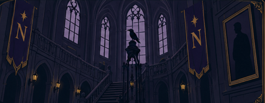

Nieuwsgierigheid
Nevermore stimuleert studenten om vragen te stellen, geheimen te onderzoeken en verder te kijken dan de eerste indruk.
Over Nevermore
Op Nevermore Academy draait het niet alleen om kennis, maar ook om wie je bent en wat jou bijzonder maakt.
De waarden van Nevermore sluiten aan bij studenten die anders durven denken. Nieuwsgierigheid, lef, eigenheid en samenwerking staan centraal. De academie moedigt studenten aan om vragen te stellen, verder te kijken dan het zichtbare en hun eigen pad te volgen. Deze waarden zie je ook in de website: de gebruiker ontdekt informatie stap voor stap en wordt uitgedaagd om actief keuzes te maken.

Nevermore stimuleert studenten om vragen te stellen, geheimen te onderzoeken en verder te kijken dan de eerste indruk.
Studenten worden aangemoedigd om keuzes te maken, grenzen te verleggen en hun eigen talent te laten zien.
Iedere student is anders. Nevermore ziet dit niet als probleem, maar juist als kracht.
De academie draait ook om gemeenschap. Studenten leren van elkaar en groeien samen binnen hun eigen huis en de school.